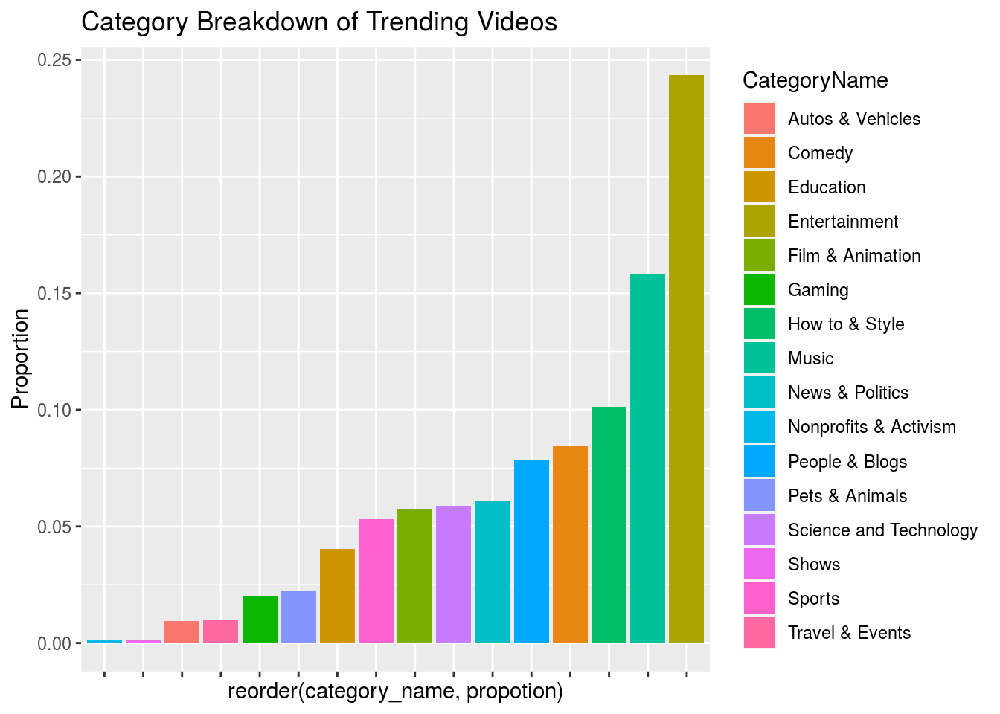
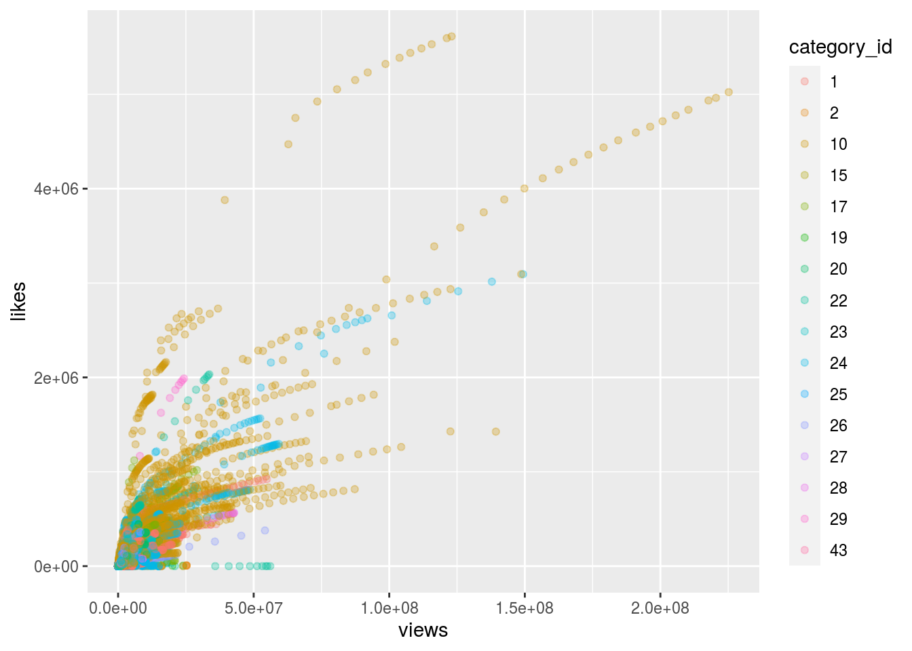
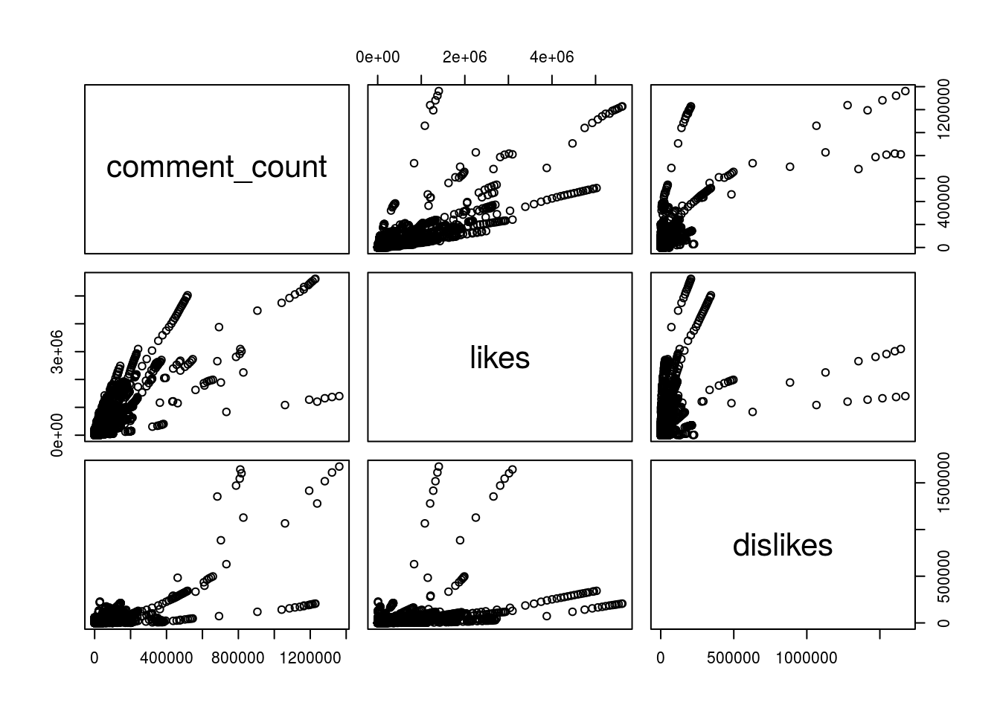
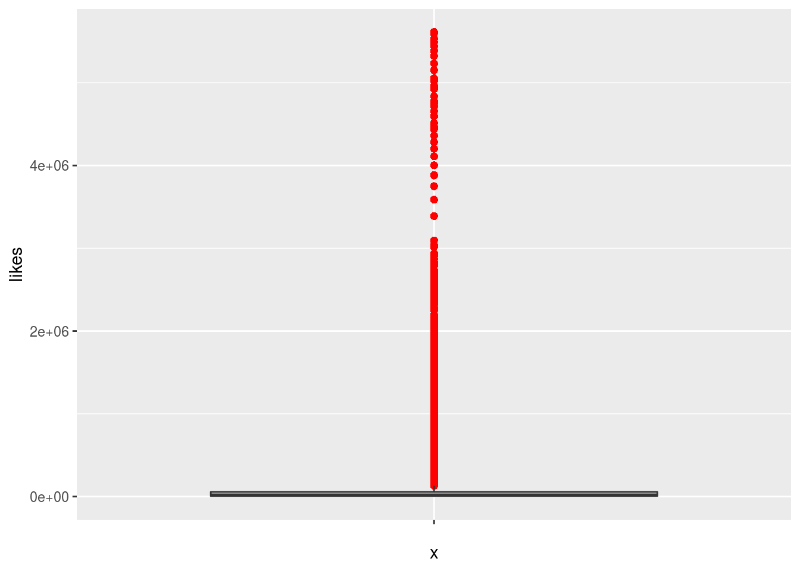
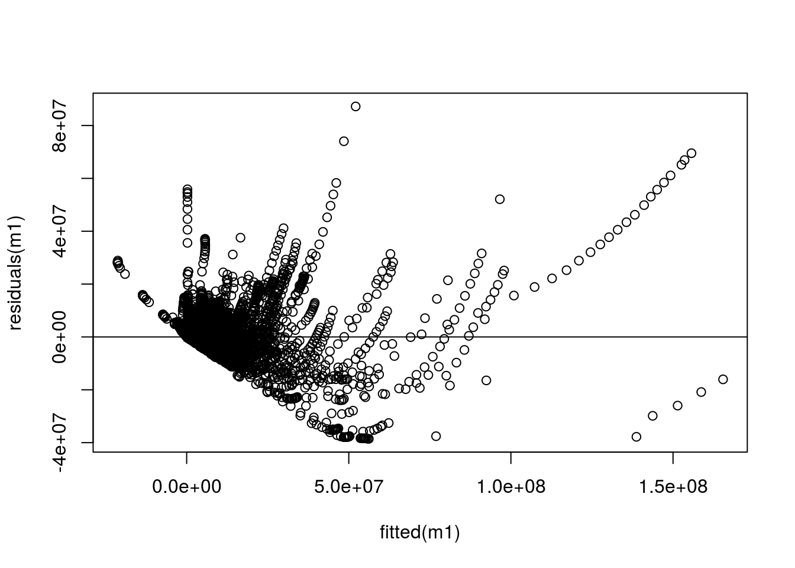
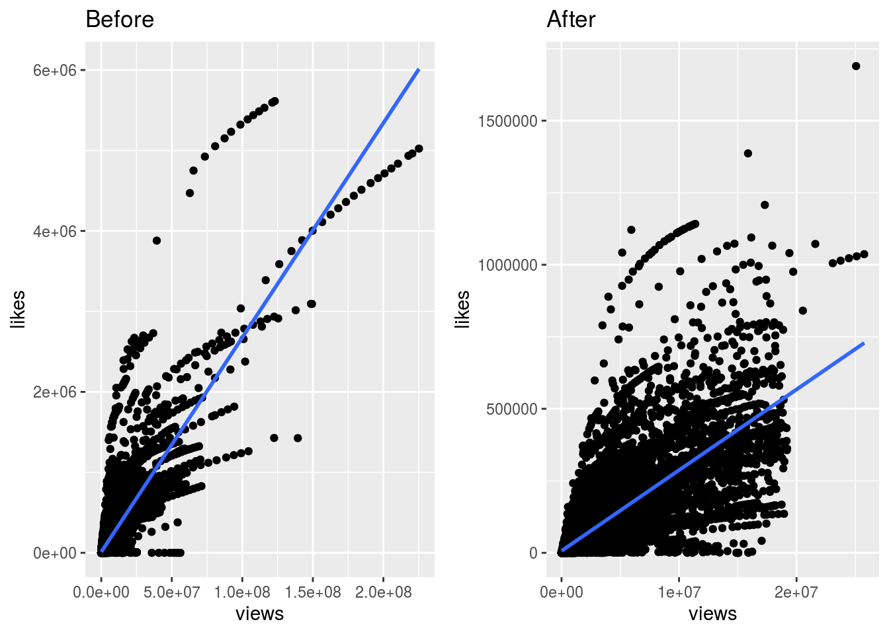
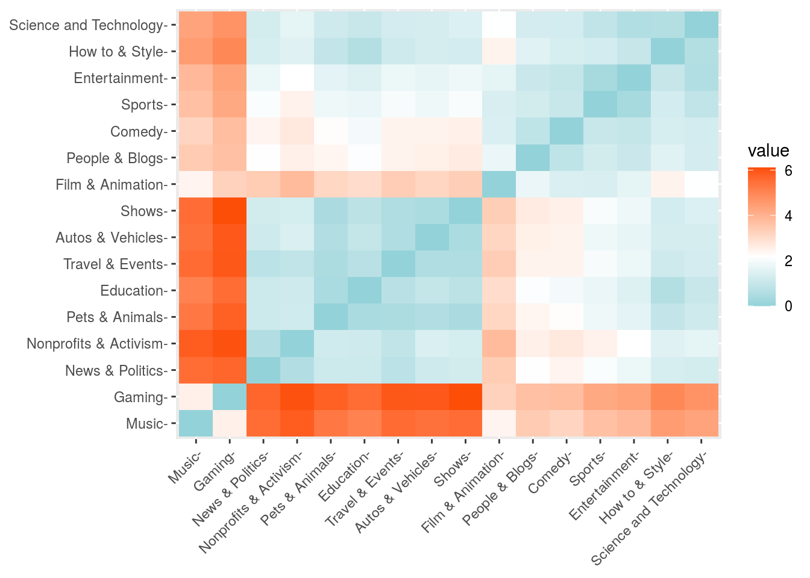
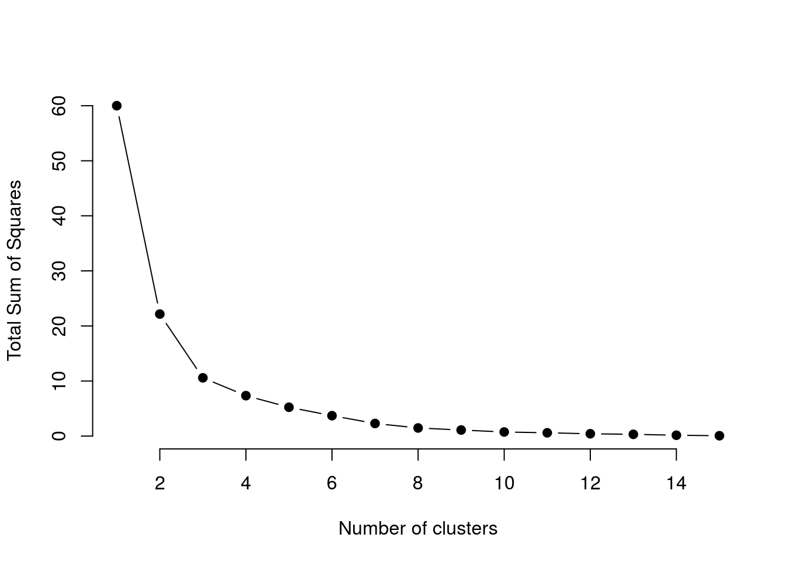
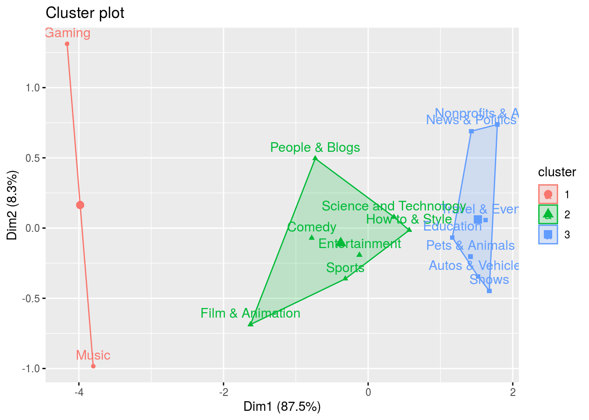
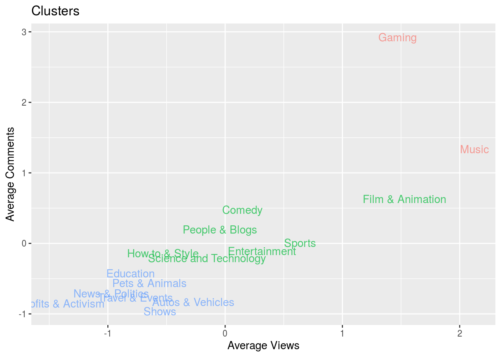

The US Videos dataset contains 40,949 observations of the top trending videos on YouTube. 16 variables are available in the dataset: video_id, trending date, title, channel_title, category_id, publish_time, tags, views, likes, dislikes, comment_count, thumbnail link, comments_disabled, ratings_disabled, video_error_removed, and description.
6,311 observations in the dataset are unique videos. Some videos appear multiple times in the dataset because they are trending on different dates. For instance, video id “-22AJoFxY”, an acoustic performance of The Vamps song ‘Same to You’ appears 5 times in the dataset because it is trending on five seperate dates.
The intention of this analysis is to analyze category_ids, and thus the number of times a video was trending is not of interest for this analysis. In that case, videos are aggregated across dates of trending, and instead grouped by their category_ids.
A new variable, “proportion” is created from the sum of the times that each category appears in the data set, divided by the total number of observations. This variable “proportion” is then graphed against each category_id to provide a visualization of differences in proportion of category ids that are trending in the dataset.
Category lables were pulled from the Kaggle website, and later matched with the data after analyses were run.
Cateogories include: 1 - Film & Animation 2 - Autos & Vehicles 10 - Music 14 - Education 15- Pets & Animals 17 - Sports 18 - Short Movies 19 - Travel & Events 20 - Gaming 21 - Videoblogging 22- People & Blogs 24 - Entertainment 25 - News & Politics 26- Howto & Style 28 - Science and Technology 30 - Movies 31 - Anime/Animation 32 - Action/Adventure 43- Shows
#load packages and import dataset
library(tidyverse)
usvideos <- read_csv("UsVideos (3).csv")
#recode category_id as factor
usvideos$category_id <- as.factor(usvideos$category_id)
#create a new variable to match category ids
usvideos$category_name <- 0
usvideos <- usvideos %>%
mutate(category_name = case_when(category_id == 1 ~ "Film & Animation",
category_id == 2 ~ "Autos & Vehicles",
category_id == 10 ~ "Music",
category_id == 14 ~ "Education",
category_id == 15 ~ "Pets & Animals",
category_id == 17 ~ "Sports",
category_id == 18 ~ "Short Movies",
category_id == 19 ~ "Travel & Events",
category_id == 20 ~ "Gaming",
category_id == 21 ~ "Videoblogging",
category_id == 22 ~ "People & Blogs",
category_id == 23 ~ "Comedy" ,
category_id == 24 ~ "Entertainment",
category_id == 25 ~ "News & Politics",
category_id == 26 ~ "How to & Style",
category_id == 27 ~ "Education",
category_id == 28 ~ "Science and Technology",
category_id == 29 ~ "Nonprofits & Activism",
category_id == 30 ~ "Movies",
category_id == 31 ~ "Anime/Animation",
category_id == 32 ~ "Action/Adventure",
category_id == 43 ~ "Shows"))
#group data by category name and sum over values
usvideos_vis <- usvideos %>%
select(video_id, category_name) %>%
group_by(video_id, category_name) %>%
summarise( n = n())
#create new "proportion" variable
usvideos_vis <- usvideos_vis %>%
group_by(category_name) %>%
summarise(n = sum(n)) %>%
mutate(propotion = n/40949) %>%
arrange(desc(propotion))
usvideos_vis$CategoryName <- usvideos_vis$category_name
library(scales)
usvideos_vis$percent <- percent(usvideos_vis$propotion)
#plot proportion of categories
plot <- ggplot(usvideos_vis, aes(x= reorder(category_name, propotion), y = propotion, fill = CategoryName)) +
geom_bar(stat = "identity") +
ylab("Proportion") +
labs(title = "Category Breakdown of Trending Videos") +
theme(axis.text.x.bottom = element_blank())
plot
plot <- ggplot(usvideos, aes(x = views, y = likes, color = category_id)) +
geom_point(alpha = .3)
plot
A total of 397 observations from the data were missing video_ids. These were coded at “#NAME?” in the data. Without more information on why these video_ids were missing, I decided to remove these observations from the dataset. Limitations to this approach are discussed in the limitations section.
Upon removing these cases from the dataset, there are 40,552 observations in the dataset.
Next, an outlier analysis was performed using Cooks Distance. Cooks distance finds influential outliers in a set of predictor variables distance by showing the influence of these observations on the fitted response. In this case, the distance that comments, dislikes and likes affected the views provided the index measure for Cook’s distance.
Removing those observations with a Cook’s distance greater than 4 divided by the sample size brought the final amount of observations to 39825.
An additional point of interest in data cleaning are repeat observations. In some cases, the same video_id appears in the dataset undr two different category ids. For instance, video id 5Q7mKQmNWSE, a “Solution to the Samsung Note8 not Charging” appears under both category id 26 (How to and Style) and 28 (Science and Technology). 17 video IDs fall into this category. Consequences of repeat entries to the category_id for the same variable are discussed in the limitations section. For the purpose of this analysis, all repeat entries remain in the dataset.
#remove cases with missing video names
usvideos <- usvideos %>%
filter(video_id != "#NAME?") # removal brings us to 40552 observations
#check for repeat information
df1 <- usvideos%>%
select(category_id, video_id) %>%
group_by(video_id, category_id) %>%
summarise(n = n()) %>%
arrange(video_id)## `summarise()` regrouping output by 'video_id' (override with `.groups` argument)length(unique(df1$video_id))## [1] 6281dat <- duplicated(df1[,1])
#show a logical vector table of repeat video_ids for multiple categories
table(dat)## dat
## FALSE TRUE
## 6281 17#potential code to chose the first row that they appeared in if there are duplicates
# df1 <- df1 %>%
# group_by(video_id) %>%
# filter(row_number() == 1)
#graph the data to see outliers
df2<- usvideos %>%
select(comment_count, likes, dislikes)
#pairs code
pairs(df2)
#boxplot
library(ggplot2)
ggplot(df2, aes(x = "", y=likes)) +
geom_boxplot(outlier.colour="red",
outlier.shape=16,
outlier.size=2, notch=FALSE)
#residual plots
m1 <- lm(views ~ comment_count + likes + dislikes, data = usvideos)
summary(m1)##
## Call:
## lm(formula = views ~ comment_count + likes + dislikes, data = usvideos)
##
## Residuals:
## Min 1Q Median 3Q Max
## -38560734 -401525 -195202 165856 87212465
##
## Coefficients:
## Estimate Std. Error t value Pr(>|t|)
## (Intercept) 2.427e+05 1.773e+04 13.69 <2e-16 ***
## comment_count -9.483e+01 9.805e-01 -96.72 <2e-16 ***
## likes 3.516e+01 1.281e-01 274.55 <2e-16 ***
## dislikes 8.113e+01 8.414e-01 96.42 <2e-16 ***
## ---
## Signif. codes: 0 '***' 0.001 '**' 0.01 '*' 0.05 '.' 0.1 ' ' 1
##
## Residual standard error: 3391000 on 40548 degrees of freedom
## Multiple R-squared: 0.7869, Adjusted R-squared: 0.7869
## F-statistic: 4.991e+04 on 3 and 40548 DF, p-value: < 2.2e-16plot(fitted(m1), residuals(m1))
abline(h=0)
####COOKS DISTANCE
mod <- lm(views ~ dislikes, data = usvideos)
cooksd <- cooks.distance(mod)
# Plot the Cook's Distance using the 4/n criterion
# sample_size <- nrow(usvideos)
# plot(cooksd, pch="*", cex=2, main="Influential Observations by Cooks distance")
# abline(h = 4/sample_size, col="red") # add cutoff line
#linear model for Cooks Distance
mod <- lm(views ~ comment_count, data = usvideos)
cooksd <- cooks.distance(mod)
# Plot the Cook's Distance
sample_size <- nrow(usvideos)
# plot(cooksd, pch="*", cex=2, main="Influential Obs by Cooks distance") # plot cook's distance
# abline(h = 4/sample_size, col="red") # add cutoff line
# influential row numbers
influential <- as.numeric(names(cooksd)[(cooksd > (4/sample_size))])
usvideos_withoutoutliers <- usvideos[-influential, ]
plot3 <- ggplot(data = usvideos, aes(x = views, y = likes)) +
geom_point() +
geom_smooth(method = lm) +
ggtitle("Before")
plot4 <- ggplot(data = usvideos_withoutoutliers, aes(x = views, y = likes)) +
geom_point() +
geom_smooth(method = lm)+
ggtitle("After")
gridExtra::grid.arrange(plot3, plot4, ncol=2)## `geom_smooth()` using formula 'y ~ x'## `geom_smooth()` using formula 'y ~ x'
Using the cleaned dataset withoutliers removed, I now organize the data into a grouped fashion that is appropriate for the kmeans algorithm.
Averaging over category id and video_id, I obtain the average views, likes, dislikes and comments for each category_id, then scale the data and perform an initial visualization of distance between similar categories.
usvideos <- usvideos_withoutoutliers
data <- usvideos %>%
select(category_id, comment_count, likes, dislikes, views, category_name) %>%
group_by(category_id, category_name) %>%
summarise(average_views = mean(views),
average_likes = mean(likes),
average_dislikes = mean(dislikes),
average_comments = mean(comment_count))
data <- data %>%
column_to_rownames(var = 'category_name')
df <- data %>%
select(average_comments, average_dislikes,
average_likes, average_views)
save(data, file = "data/data1.Rdata")
#scale the data
df<- scale(df)
library(factoextra)
distance <- get_dist(df)
plot <- fviz_dist(distance, gradient = list(low = "#00AFBB", mid = "white", high = "#FC4E07"))
plot
save(plot, file = 'images/plot.png')Visualizing the data is not itself enough to determine the optimal number of clusters. The elbow method plots the cost function against changing values of k by showing how the Sum of Squares of Error changes as k increases. The elbow demosntrats the point where diminishing returns of decreasing SSE occur as one larger k is chosen. Such a distinction is key in the bias variance tradeoff.
#to determine the optimal number of clusters
set.seed(123)
#function to compute total within-cluster sum of square
wss <- function(k) {
kmeans(df, k, nstart = 10 )$tot.withinss
}
#
k.values <- 1:15
# extract wss
wss_values <- map_dbl(k.values, wss)
plot(k.values, wss_values,
type="b", pch = 19, frame = FALSE,
xlab="Number of clusters",
ylab="Total Sum of Squares")
#k means function
k2 <- kmeans(df[,(1:3)], centers = 3, nstart = 25)
k2## K-means clustering with 3 clusters of sizes 2, 7, 7
##
## Cluster means:
## average_comments average_dislikes average_likes
## 1 2.1295828 2.0369916 1.9954606
## 2 0.1215935 0.1517913 0.2154624
## 3 -0.7300457 -0.7337889 -0.7855940
##
## Clustering vector:
## Film & Animation Autos & Vehicles Music
## 2 3 1
## Pets & Animals Sports Travel & Events
## 3 2 3
## Gaming People & Blogs Comedy
## 1 2 2
## Entertainment News & Politics How to & Style
## 2 3 2
## Education Science and Technology Nonprofits & Activism
## 3 2 3
## Shows
## 3
##
## Within cluster sum of squares by cluster:
## [1] 3.021735 2.655799 1.580082
## (between_SS / total_SS = 83.9 %)
##
## Available components:
##
## [1] "cluster" "centers" "totss" "withinss" "tot.withinss"
## [6] "betweenss" "size" "iter" "ifault"fviz_cluster(k2, data = df)
df %>%
as_tibble() %>%
mutate(cluster = k2$cluster,
names = row.names(data)) %>%
ggplot(aes(average_views, average_comments, color = factor(cluster), label = names)) +
geom_text(alpha = .7) +
ggtitle("Clusters") +
ylab("Average Comments" )+
xlab("Average Views") +
theme(legend.position = "none")
#k means function
k2 <- kmeans(df[,(1:4)], centers = 3, nstart = 25)
k2## K-means clustering with 3 clusters of sizes 5, 9, 2
##
## Cluster means:
## average_comments average_dislikes average_likes average_views
## 1 0.2399485 0.3182714 0.3607708 0.5163850
## 2 -0.6065453 -0.6294823 -0.6438639 -0.6863199
## 3 2.1295828 2.0369916 1.9954606 1.7974771
##
## Clustering vector:
## Film & Animation Autos & Vehicles Music
## 1 2 3
## Pets & Animals Sports Travel & Events
## 2 1 2
## Gaming People & Blogs Comedy
## 3 1 1
## Entertainment News & Politics How to & Style
## 1 2 2
## Education Science and Technology Nonprofits & Activism
## 2 2 2
## Shows
## 2
##
## Within cluster sum of squares by cluster:
## [1] 2.982433 4.359417 3.237588
## (between_SS / total_SS = 82.4 %)
##
## Available components:
##
## [1] "cluster" "centers" "totss" "withinss" "tot.withinss"
## [6] "betweenss" "size" "iter" "ifault"usvideos_music <- usvideos%>%
filter(category_name == 'Music') %>%
arrange(desc(views, comment_count))
head(usvideos_music)## # A tibble: 6 x 17
## video_id trending_date title channel_title category_id publish_time
## <chr> <chr> <chr> <chr> <fct> <dttm>
## 1 sS0LCjO… 18.27.03 GOT7… jypentertain… 10 2018-03-12 09:00:02
## 2 sS0LCjO… 18.26.03 GOT7… jypentertain… 10 2018-03-12 09:00:02
## 3 ffxKSjU… 18.22.04 Aria… ArianaGrande… 10 2018-04-20 04:00:03
## 4 sS0LCjO… 18.25.03 GOT7… jypentertain… 10 2018-03-12 09:00:02
## 5 sS0LCjO… 18.24.03 GOT7… jypentertain… 10 2018-03-12 09:00:02
## 6 sS0LCjO… 18.23.03 GOT7… jypentertain… 10 2018-03-12 09:00:02
## # … with 11 more variables: tags <chr>, views <dbl>, likes <dbl>,
## # dislikes <dbl>, comment_count <dbl>, thumbnail_link <chr>,
## # comments_disabled <lgl>, ratings_disabled <lgl>,
## # video_error_or_removed <lgl>, description <chr>, category_name <chr>usvideos_shows <- usvideos%>%
filter(category_name == 'News & Politics') %>%
arrange(desc(views, comment_count))
usvideos_tech <- usvideos%>%
filter(category_name == 'How to & Style') %>%
arrange(desc(views, comment_count))
usvideos_comedy <- usvideos%>%
filter(category_name == 'Comedy') %>%
arrange(desc(views, comment_count))To begin, limitations of the kmeans algorithm are considered. K-means can only handle numerical data, thereby eliminating other valuable sources of information that can provide insight into trending factors. By possibly converting other variables to integers, we could add more information to this. Additionally, k-means is dependent on choosing the k manually through an elbow plot. While this choice of k is clear cut given the amount of cateogiry_id for videos that are present, incrasing the categories may affect the choice.
Additionally, the data provided and choices in data cleaning steps provide directions of limitations to consider. As mentioned, the choice to remove observations where the video_id was not provided removed over 300 observations from the dataset. An analysis of these missing data points would be of interest with more time. For instance, if the data were missing at random, or missing not at random, implications for the analysis would be more clear.
Likewise, certain videos appeared in the dataset under two different category_ids. Since the intention of the analysis directly hinged on this variable cateogry_id, then understanding why and in what cases videos were coded with two sepearte category_ids may yield other insights.
The kmeans clustering design provides information on the clusters of category_ids for YouTube videos in the provided data set and implications for the product and sales team are various. For one, the sales team may use these analytics data to discuss alternative pricing stragies for ads based on clusters of videos. Another department at YouTube, the product team, may use the results of this analysis to better understand content creation.
Looking forward, this analysis can be extended in a few key ways. First, a wider range of data, particularly data that is gleaned from other countries, will give us an opportunity to compare categories of videos in different geographies. Next, additional variables included in the dataset and ones that would be easily scraped by a team at YouTube, such as duration of videos, could open up the door for future analyses. Finally, predictive analytical methods such as ML regression models that use the derived clusters as predictorr variables could provide more than simpel associations in the dataset.